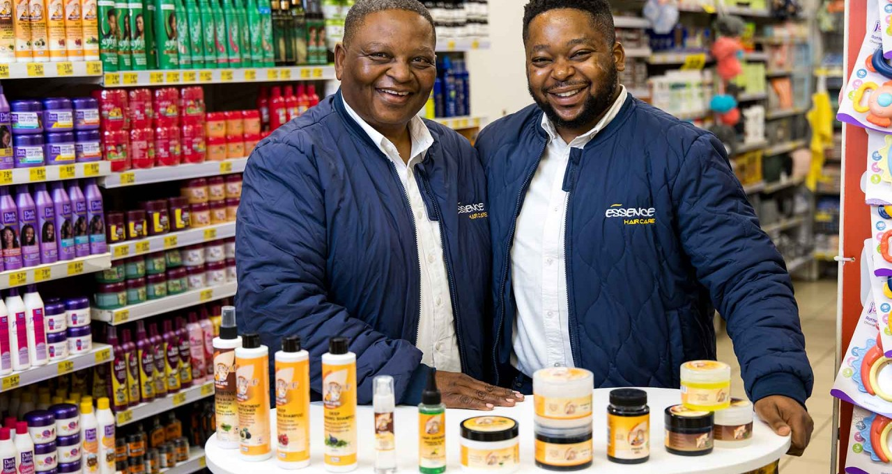
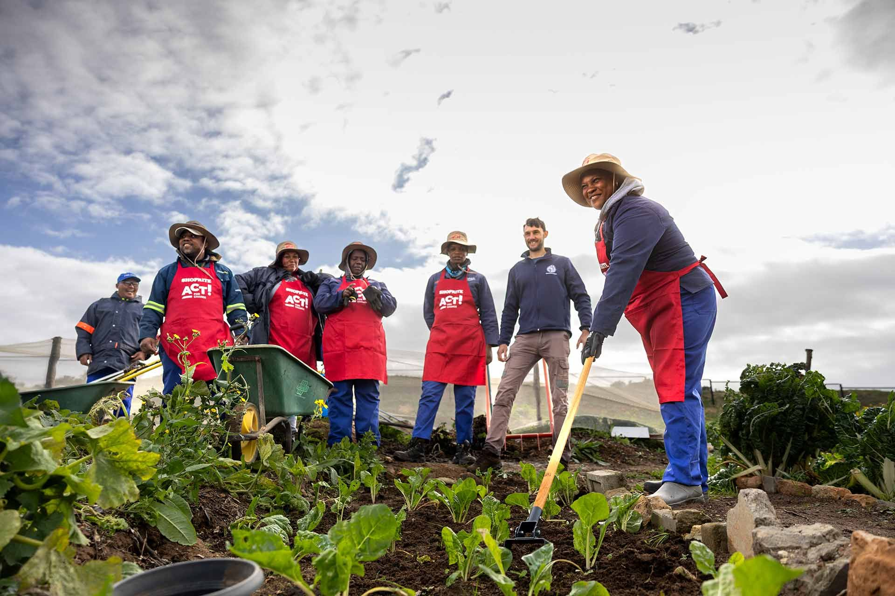
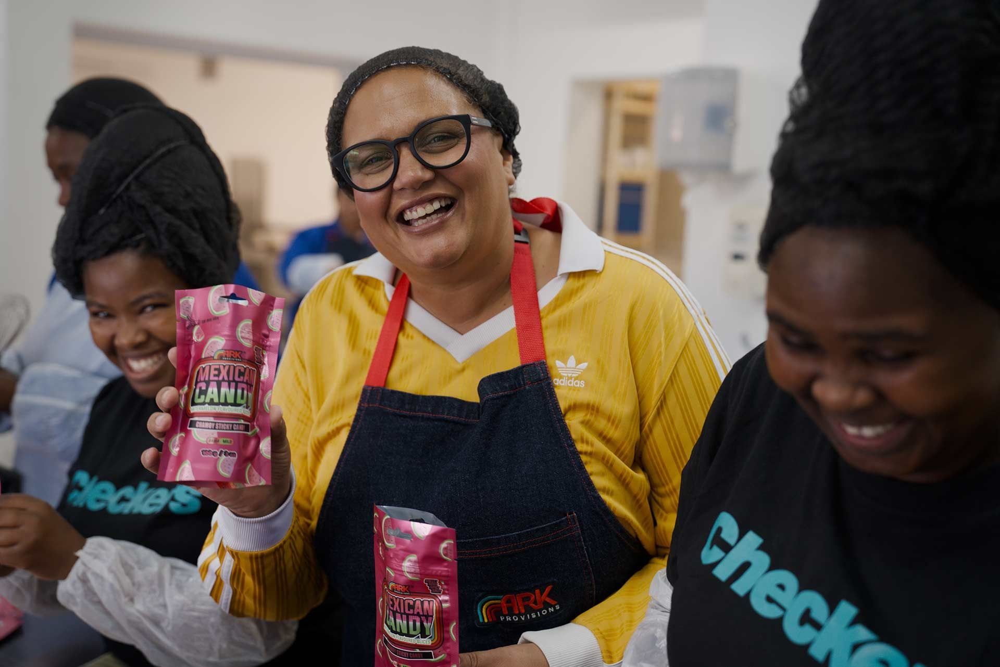

18 June 2026
For more than 40 years, Norman Motsepe (56) has built a career around helping South Africans look and feel their best. Today, his son, Agobokwe (31), is helping to carry that legacy forward through Essence Hair Care, a family-owned business whose products are stocked in 20 Shoprite supermarkets across Gauteng.
Long before Essence Hair Care existed, Norman had already established himself as a respected figure in South Africa’s haircare industry. Since the 1980s, he has worked with leading brands, tested products, owned salons across Pretoria and represented South Africa at the Bronner Brothers Hair Show in Chicago, earning recognition as one of Africa’s leading stylists.
Norman followed his passion for hair care and opened a salon, despite his father’s initial hesitation. Over time, he built a fulfilling career that would later inspire his own son to follow in his footsteps. When economic conditions shifted, he stepped away from the industry, but his love for the work never faded. Years later, it was his son who encouraged him to return to what he loved most.
“As the years went by, I often spoke to him about going back, because that was his passion and where he found real joy.”
- Agobokwe Motsepe, Essence Hair Care co-founder
In 2017, Norman made the leap, launching a venture that would officially become Essence Hair Care in 2019. Initially focused on salon supplies, the family was forced to rethink its strategy when Covid-19 lockdowns brought the salon industry to a halt. They sold their home to fund the next phase of growth and shifted their focus to cosmetic stores and online sales – a move that coincided with Agobokwe joining the business full-time.
For Agobokwe, it also created an opportunity to work alongside the person who had shaped many of his values and ambitions.
“I have seen first-hand the grit, courage and determination it takes to be a strong father and role model,” he says. “Professionally, it takes patience and understanding, but at the end of the day, when there’s trust, love and a common goal, there’s no one else I would rather lean on than my father.”
The early days were a hands-on affair. With limited resources, the duo often worked in shifts to keep up with demand.
“One would label products during the day, and the other at night. In the morning we would shrink-wrap everything by hand before heading out to distribute orders,” recalls Agobokwe.
As the business expanded, its range grew from 10 products in 20 outlets to 22 products stocked in 300 cosmetic shops nationwide.

Essence Hair Care founders, Norman Motsepe (56) and son Agobokwe Motsepe (31).
September 2024 proved to be a pivotal moment for the business when Essence Hair Care secured a listing with the Shoprite Group, Africa’s largest retailer. By opening access to a broader retail market, the partnership enabled the brand to reach more customers, with products now stocked in 20 Shoprite supermarkets across Gauteng. The increased visibility has resulted in sales growth of more than 130% and created new jobs.
“With the growth we’ve experienced through Shoprite, we’ve been able to hire six additional workers across production, sales, and general operations,” says Agobokwe.
The company now employs 22 people and recently moved into its fourth manufacturing facility in Centurion, providing additional production capacity, improved logistics, and room for future growth.
The family dynamic remains central to the business. Norman focuses on sales and customer relationships, while Agobokwe oversees production and procurement.
“Building a business as a family gives us a competitive edge because different generations, viewpoints and approaches come together to build something solid,” he says.
For father and son, the next chapter of growth is still being written together.

Brand News | Jul 19, 2026
With meal planning becoming even more challenging as schools reopen and households return to packed weekday schedules after the mid-year break, Checkers has partnered with world-renowned chef, Jamie Oliver, to help solve the “What’s for dinner” dilemma.

CSI - Act For Change | Jul 17, 2026
Shoprite’s Mobile Soup Kitchen, Financial Services, and Early Careers teams joined forces with the VUSA Rugby & Learning Academy in Langa this Mandela Day, bringing essential support directly to the community - from warm meals and career guidance to accessible financial services.

CSI - Act For Change | Jul 16, 2026
For many South Africans facing food insecurity, a grocery donation can mean the difference between going without a meal and having enough to share around the table.

Brand News | Jul 13, 2026
Since its launch in April 2026, Sixty60's AI-powered shopping assistant, Pixie, has rapidly become one of the platform's most successful product innovations, with millions of personalised shopping interactions helping customers save time on one of life's most repetitive tasks: grocery shopping.

CSI - Act For Change | Jul 8, 2026
Practitioners from ten Early Childhood Development (ECD) centres in the Western Cape have completed skills and development training as part of Shoprite’s Act for Change programme, strengthening the quality of early learning for 580 children from Atlantis, Langa and Gugulethu during the important years that shape their development.

CSI - Act For Change | Jul 6, 2026
Shoprite’s network of community food gardens has reached a major milestone, with the Zero Organic Waste to Landfill Project outside Bredasdorp officially recognised as the 300th garden in its programme.

Consumer News | Jun 23, 2026
Sweet, sour, salty, and spicy all at once, ARK Provisions’ Mexican-inspired confectionery has achieved an average sales growth of 45% within just eight weeks of launching in 11 Checkers stores across Cape Town.